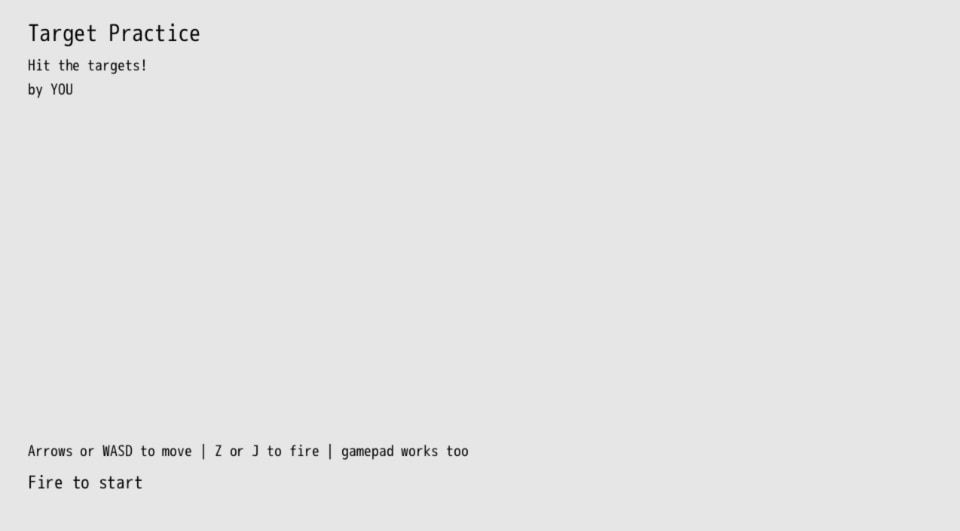

Scenes
When making a game, there are all sorts of scenes that exist, from the main menu to the actual gameplay to the pause menu. Often these scenes have different interactions than the main game. Instead of moving your character around the world you instead move a cursor up and down menu options. In this chapter we'll refactor our main gameplay and game over state to be a bit easier to work with and then introduce a title scene that's used to start the game.
The concept of a "scene" isn't specific to DragonRuby Game Toolkit or any given game engine. It's just a generic concept that we're introducing to make our game code easier to work with. Much like a movie scene, it's clear when one ends and when one begins.
When we introduced the game over functionality, we actually introduced a scene separate from gameplay. Kinda neat! But it wasn't the time to think about them in terms of scenes and reckon with how we add more.
Refactor
So we've got two scenes right now: gameplay (where we shoot at targets) and game over (where we display the score and allow the player to restart). Let's refactor the code to put our scenes in different methods and allow the game to switch between them given certain conditions being met.
Containing our scenes in methods will make it much easier to change one scene without impacting the others. It sets clear boundaries and will make our code easier to maintain.
We've already got #game_over_tick, so we can make use of that to contain the game over behavior.
Let's introduce a #gameplay_tick method that will contain the logic for our gameplay. And then we'll use args.state.scene to keep track of the current scene. Then if we change that value, it'll change what scene our game uses.
Not much of the code changes, but we do shuffle things around a bit. None of the methods above #game_over_tick change, so they're excluded:
HIGH_SCORE_FILE = "high-score.txt"
def game_over_tick(args)
args.state.high_score ||= args.gtk.read_file(HIGH_SCORE_FILE).to_i
args.state.timer -= 1
if !args.state.saved_high_score && args.state.score > args.state.high_score
args.gtk.write_file(HIGH_SCORE_FILE, args.state.score.to_s)
args.state.saved_high_score = true
end
labels = []
labels << {
x: 40,
y: args.grid.h - 40,
text: "Game Over!",
size_enum: 10,
}
labels << {
x: 40,
y: args.grid.h - 90,
text: "Score: #{args.state.score}",
size_enum: 4,
}
if args.state.score > args.state.high_score
labels << {
x: 260,
y: args.grid.h - 90,
text: "New high-score!",
size_enum: 3,
}
else
labels << {
x: 260,
y: args.grid.h - 90,
text: "Score to beat: #{args.state.high_score}",
size_enum: 3,
}
end
labels << {
x: 40,
y: args.grid.h - 132,
text: "Fire to restart",
size_enum: 2,
}
args.outputs.labels << labels
if args.state.timer < -30 && fire_input?(args)
$gtk.reset
end
end
def gameplay_tick(args)
args.outputs.solids << {
x: 0,
y: 0,
w: args.grid.w,
h: args.grid.h,
r: 92,
g: 120,
b: 230,
}
args.state.player ||= {
x: 120,
y: 280,
w: 100,
h: 80,
speed: 12,
}
player_sprite_index = 0.frame_index(count: 6, hold_for: 8, repeat: true)
args.state.player.path = "sprites/misc/dragon-#{player_sprite_index}.png"
args.state.fireballs ||= []
args.state.targets ||= [
spawn_target(args), spawn_target(args), spawn_target(args)
]
args.state.score ||= 0
args.state.timer ||= 30 * FPS
args.state.timer -= 1
if args.state.timer == 0
args.audio[:music].paused = true
args.outputs.sounds << "sounds/game-over.wav"
args.state.scene = "game_over"
return
end
handle_player_movement(args)
if fire_input?(args)
args.outputs.sounds << "sounds/fireball.wav"
args.state.fireballs << {
x: args.state.player.x + args.state.player.w - 12,
y: args.state.player.y + 10,
w: 32,
h: 32,
path: 'sprites/fireball.png',
}
end
args.state.fireballs.each do |fireball|
fireball.x += args.state.player.speed + 2
if fireball.x > args.grid.w
fireball.dead = true
next
end
args.state.targets.each do |target|
if args.geometry.intersect_rect?(target, fireball)
args.outputs.sounds << "sounds/target.wav"
target.dead = true
fireball.dead = true
args.state.score += 1
args.state.targets << spawn_target(args)
end
end
end
args.state.targets.reject! { |t| t.dead }
args.state.fireballs.reject! { |f| f.dead }
args.outputs.sprites << [args.state.player, args.state.fireballs, args.state.targets]
labels = []
labels << {
x: 40,
y: args.grid.h - 40,
text: "Score: #{args.state.score}",
size_enum: 4,
}
labels << {
x: args.grid.w - 40,
y: args.grid.h - 40,
text: "Time Left: #{(args.state.timer / FPS).round}",
size_enum: 2,
alignment_enum: 2,
}
args.outputs.labels << labels
end
def tick args
if args.state.tick_count == 1
args.audio[:music] = { input: "sounds/flight.ogg", looping: true }
end
args.state.scene ||= "gameplay"
send("#{args.state.scene}_tick", args)
end
#game_over_tick is the same except for the addition of:
args.state.timer -= 1
We need to continue to subtract from the timer in each tick since we rely upon it for when we accept input to restart the game.
We introduce #gameplay_tick which contains all of our logic for when we're actually playing the game. We set the background to the blue solid rectangle and initialize our player and animate the sprite. That's all the same.
But when the timer is 0, after we pause the music and play the game over sound, we set args.state.scene to "game_over" and return early. This effectively changes the scene.
We continue to handle input and display the gameplay sprites and labels in #gameplay_tick.
Then, finally, #tick has been drastically simplified. It no longer needs to be responsible for so much. It can instead just handle three things:
- starting the music for the game
- Lazily initializing the scene to start with (in our case,
"gameplay") - Calling the proper scene tick method and passing in
args
The third item there is the new part of this chapter. #send is a method in Ruby that allows a method to be called by passing in the name of the method as the first parameter. This is really powerful! We use string interpolation to take the value set in args.state.scene and append it with _tick. Our game then calls that method and passes in args as the first parameter to the called method. So if args.state.scene is set to "gameplay", the #gameplay_tick method gets called. If it's set to "game_over", then #game_over_tick gets called. If it's set to "credits", then #credits_tick would get called.
The various scene tick methods need to exist in order for changing args.state.scene to work. But that's quite simple to do, we just introduce a new method and set args.state.scene to change between scenes.
Title Scene
When players launch our game, they get dropped right into the gameplay. This can be a bit jarring, so let's introduce a new scene that displays the title of the game, controls, and lets them press a button to start.
In our game code, let's introduce #title_tick that takes args as its only parameter, just like our other *_tick methods for our scenes. In #title_tick, we'll render some labels and look for input to start our game. If the fireball input is pressed, we'll play a sound effect, change the scene, and return early so we can move on to the next scene.
def title_tick args
if fire_input?(args)
args.outputs.sounds << "sounds/game-over.wav"
args.state.scene = "gameplay"
return
end
labels = []
labels << {
x: 40,
y: args.grid.h - 40,
text: "Target Practice",
size_enum: 6,
}
labels << {
x: 40,
y: args.grid.h - 88,
text: "Hit the targets!",
}
labels << {
x: 40,
y: args.grid.h - 120,
text: "by YOU",
}
labels << {
x: 40,
y: 120,
text: "Arrows or WASD to move | Z or J to fire | gamepad works too",
}
labels << {
x: 40,
y: 80,
text: "Fire to start",
size_enum: 2,
}
args.outputs.labels << labels
end
Replace YOU with your name since you made it. It's important to take credit for your work.
Then in #tick lazily initialize args.state.scene to now be "title":
def tick args
if args.state.tick_count == 1
args.audio[:music] = { input: "sounds/flight.ogg", looping: true }
end
args.state.scene ||= "title"
send("#{args.state.scene}_tick", args)
end
Now when you start the game, the title scene will be displayed:

When you press the fire button, the game will start. And when you restart after game over, you'll end up back on the title scene.
Extra Credit
- Display a label with the current high score in the title scene so players know what to aim for.
- Display the dragon sprite in the title scene to give a player a taste of what they can expect.
- How could you make it so that the music doesn't start until gameplay starts? Or play different music during the title scene?
- Restarting the game back on the title scene may not be ideal. How would you change it so that restarting the game automatically goes to the
gameplayscene? - Allow players to pause the game while in the middle of the gameplay scene.
Summary
We've now got three scenes in our game and can easily switch between them. The code for each scene is contained within its own method, making it easier to change a given scene without accidentally changing the others. Adding another scene to our game, like a pause menu, wouldn't be very complicated.
What's Next
For all intents and purposes our game is done! You can start it, play it, and replay it. All that's left to do is release it so that the world (or at the very least our friends) can play it.